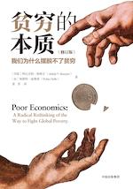

2021读书清单
| 书籍 | 简评 |
|---|---|
我每天只工作3小时 |
我觉得这就是一本影评集，和书名的关系不大。 |
UNIX传奇 |
UNIX是一个操作系统，UNIX是一种精神，UNIX是一个奇点，感谢作者呈现的这段传奇！ |
2020读书清单
| 书籍 | 简评 |
|---|---|
|  贫穷的本质 |
翻开本书前，我以为这本书研究的是我这样的人，合上本书后，嗯，我的感觉没错。 |
 人生海海 |
人生海海，当看清生活的真相后，却依然热爱生活。 |
 呼吸 |
这是一部短片小说集，我喜欢其中关于时空穿越门、空气就是记忆本身等描述，作者把当今前沿的热寂、人工智能、平行宇宙、量子力学等概念以小说的形式呈现，让人印象深刻。 |
曾国藩传 |
曾国藩的一生有太多值得我学习的地方，真不爽啊，现在的我学识太低，对他的好多敬佩居然表达不出来😢。 |
 重来：更为简单的商业思维 |
兵不在多而在精，将不在勇而在谋，更何况“万重山如弹指间”的今天，我们的工作方式难道不该重来么？谢谢这本小书。 |
 重来2：更为简单高效的远程工作方式 |
或许，我们都希望工作生活两不误，只是，我们放不下年久失修的习惯！ |
OKR工作法：谷歌、领英等公司的高绩效秘籍 |
OKR=富有挑战的目标+关键结果，我赞同这种目标驱动，不过效果要试了才知道。 |
 小岛经济学 |
把一件复杂的事情做简单是很困难的，但这本书做到了，而且做得很好👍 |
病毒来袭 |
从基因层面到物种间交换科普了病毒知识 |
 白夜行 |
精彩，太精彩了！！ |
血疫 |
感受到了埃博拉病毒的可怕，虽然本书用纪实小说的方式写成，但总体觉得有些画蛇添足 |
零售的哲学 |
以时刻应对变化的心态铸就经典，从一开始就坚定不移地站在买方市场，果然大道至简啊！ |
领导者的资质 |
本书其实一般般吧，就是本演讲集。冲着稻盛和夫这四个字读的，我喜欢里边的一句话：“能力要用将来进行时”。 |
生命是什么 |
感谢薛定谔这位伟大的物理学家，能够抛开哲学客观地探讨生命的本质，不愧是分子生物学的奠基之作，基因是一种非周期性晶体，突变源于量子理论，生命即负熵… |
2019读书清单
| 书籍 | 简评 |
|---|---|
 把时间当作朋友 |
时间就是资本，每人每天24小时，如何“挥霍”，全凭自己。时间也是实体，一分一秒全在那里，只是我们大多数都难以觉察。 |
腾讯传 |
少年强，则马化腾！看了腾讯的发展历程，感觉更像是一个少年，从偏激浮躁到成熟稳重的华丽蜕变。 |
异类 |
成功是小概率事件，需要太多我们无法掌控的机缘巧合，读了这本书我更深刻的懂得为何古人云：顺势而为。 |
创意，未来的工作方式 |
可能是我高度不够，书中很多关于创意人群的管理方法和观点读不懂，但我基本认同未来会有更多创意岗位，确实不能像管理流水线工人一样管理他们 。 |
一课经济学 |
这是一本很不错的经济学入门读物，书中用了非常丰富的例子拨开了一个个生活中常见却容易被误导的谎言 。 |
 原则 |
本书应该算是作者很多工作经历的思考和总结，但内容太过繁杂，不太可能一遍读懂，应该当作一本指导手册，时不时翻一番。 |
自私的基因 |
这是一本非常精彩的生物科普读物，里面的很多章节都不得不让我感叹大自然的神奇。 |
流浪地球 |
看完电影之后补上的小说，小说情节要比电影丰富太多了，末日面前全人类齐心协力，带着地球逃亡，这个脑洞很中国！ |
清醒思考的艺术 |
现代人保留了太多原始社会的生存本能，这些本能未必都是好的，而这本书整告诉了我，人要如何获得者明白。 |
 乌合之众 |
三人为虎，是一种毁天灭地却又吹弹可破的力量！ |
激荡十年，水大鱼大 |
2008～2018，我认为是中国“动荡”的十年，不确定性超越以往任何时候，但我也隐隐觉得，这是中国由富变强的必经之路。 |
 褚时健传 |
了不起的人，了不起的一辈子，时代的勇士。 |
 创业维艰 |
创业即煎熬，创业即孤独，创业即忙碌，创业——是活着的最好证明！ |
深度学习 |
像我这样没有较好的数学功底、深度学习基础的人，基本是在读天书了。 |
 创始人手记 |
用心做人，踏实做事，不论财富还是成功，都是自然而然。 |
大清相国 |
小说情节环环相扣，波澜起伏，读起来比较有意思，不过可能是我对此书期望太高，感觉没有想象中精彩。 |
中国历史极简本 |
感觉像在读教科书，内容不算引人入胜，但很丰富。 |
 皮囊 |
我们所谓的理想生活不过是张焦距模糊的照片，向往的是那飘渺的五彩斑斓。 |
 易中天中华史1-4 |
易老师文笔幽默，通俗易懂，书很好读，但有时读着读着就找不到北了。 |
 易中天中华史5-6 |
易老师文笔幽默，通俗易懂，书很好读，但有时读着读着就找不到北了。 |
易中天中华史7-9 |
分封开启了华夏文明，而集权与专制让这场文明得以延续。 |
易中天中华史10-12 |
三国、两晋、五胡十六国，400年的动荡与分裂，让中华文明的阶级与民族矛盾得到洗礼。 |
 易中天中华史13-16 |
梦回唐朝！ |
易中天中华史17-20 |
崖山之后无华夏，宋元这段历史看得我很揪心，一面感慨宋文化的绚烂，一面惋惜华夏模式的没落 |
坏血 |
读本书就好像在跟随一位老侦探破案一样，各种案发现场的还原，很精彩。不过我放弃去理清其中大量的人物关系。 |
人月神话 |
这几年的程序员经历，让我对研发项目有切身的体会，在读此书的时候才有很多共鸣。 |
 追风筝的人 |
本书翻译得很棒，内容也非常有感染力！我们都在追寻自己的风筝，那有成为好人的路。 |
 月亮与六便士 |
我一直在想象，斯特里克兰德的画，到底是什么样子？ |
 解忧杂货店 |
很喜欢东野圭吾的叙事风格，有点像悬疑，当最终谜底揭开后，确实慢慢的暖心治愈。 |
被讨厌的勇气 |
不论什么年纪，我决定每个人都应该读一读此书，认清自己，处理好与他人的关系。 |
 七堂极简物理课 |
一口气看完，作为现代物理科普，还行。 |
 上帝掷骰子吗 |
前半部分很精彩，越读到后面越懵，感觉智商不够用。 |
 现实不似你所见 |
近期工作原因，断断续续读完，感觉较为晦涩，理解不深入！ |
从一到无穷大 |
我尽是粗略地读了整本书，体会不算很深 |
2018读书清单
| 书籍 | 简评 |
|---|---|
 只是为了好玩 |
Linus文笔风趣幽默，在阅读他和Linux的成长时，可以看到黑客骨子里的桀骜不驯，谁也阻挡不了他们对技术的渴求。 |
 信息简史 |
信息是人类最伟大的发明之一，从非洲鼓到互联网，从商业到战争，我们在进行丰富而具体的沟通时，可曾想过这背后仅仅是简单的1和0的概率游戏。 |
 黑客与画家 |
我没能从中本书中收获太多，倒是对格雷厄姆对书呆子、商业价值等观点表示赞同。 |
干法 |
看到这位老人年轻时因为“命不好”而愤世嫉俗想要加入黑社会，后来又发奋图强，认真对待自己和工作，终究取得辉煌的经历。心生感慨，当你全力以赴时，哪怕是逆境，照样乘风破浪！ |
活法 |
作为人，何为正确？我想这就是本书想要表达的价值观，生命中有太多太多想要追求，每当我们面临选择时，不妨再想想这句话。 |
 心法 |
稻盛和夫信佛，所以书中围绕释迦摩尼的理念探讨了很多关于心智的成长，我不信佛，但这些观点依然受用。 |
人类简史 |
这是部关于智人一路逆袭爬上食物链顶端的浩荡的历史巨著，我对赫拉里的博学无以言表。此外，关于宗教、国家、物种生命等很多观点都非常开脑洞，无论如何都应该亲自读一读此书。 |
 未来简史 |
我们会永远幸福的活下去吗？不死、快乐、成神，这是本书讨论的三个核心，未来能同时占据这三点的，可能终究是极极极少数人，我们大多数人会沦为无用阶级，快乐且慵懒地度过每一天，只是没什么价值了。 |
今日简史 |
本书站在21世纪的角度从科技、政治、人文等领域的发展，总结了21条观点，发人深省，但也许是因为赫拉利人文历史背景，书中大部分内容是在讨论各种人文、自由、社会主义。 |
 写作是最好的自我投资 |
本书还是有很多写作技巧的干货，尤其是贴合当下“屏读时代”的阅读场景和方式。但我不喜欢本书后半部分对待爆文的心态，追求热门与金钱没有错，但不能没底线。 |